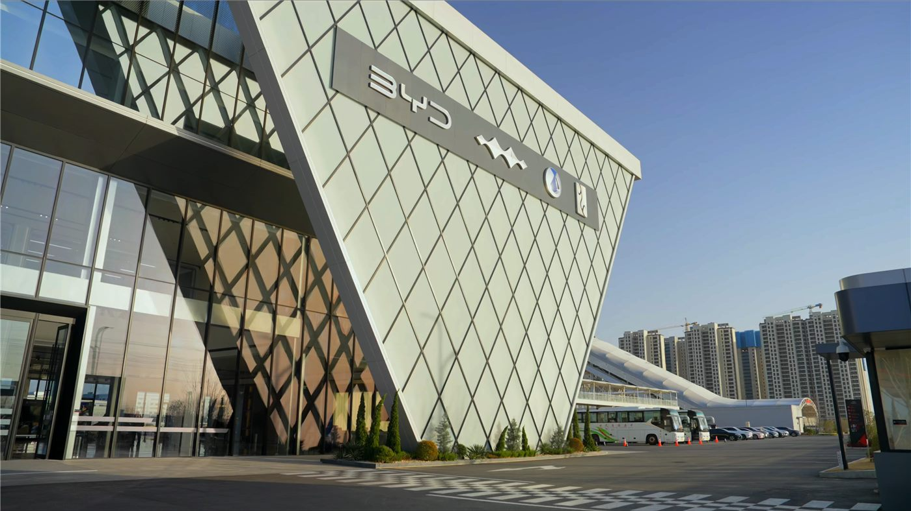

볼보, 2028년 순전기 세단·왜건 출시 검토… ‘전 SUV 노선’ 전환하나
볼보가 2028년 순수 전기 세단과 왜건(스테이션왜건) 신차를 내놓는 방안을 검토 중이라고 대만 연합보가 전했다. SUV 중심 전략에 변화를 주려는 움직임으로 읽힌다.
주유민 기자 · 2026.09.03
橋경제·문화·스포츠

볼보가 2028년을 목표로 순수 전기 세단과 왜건 신차를 선보이는 방안을 검토하고 있다고 연합보(UDN)가 보도했다. 최근 완성차 업계가 SUV 위주로 라인업을 재편해 온 흐름과는 다른 방향이다.
광고 문의 · 300×250세단과 왜건은 낮은 차체와 우수한 공기저항 특성으로 전비(전력 효율)에서 유리한 측면이 있다. 브랜드 전통과 실용성을 중시하는 소비자층을 겨냥한 선택으로 해석된다.
전기차 시장은 보조금 정책과 충전 인프라, 배터리 가격에 민감하게 반응한다. 신차 계획이 실제 출시로 이어질지는 시장 상황과 규제 환경에 달려 있다.
완성차 업체들은 SUV의 높은 수익성과 세단·왜건의 효율성 사이에서 라인업 균형을 고민하고 있다. 소비자 취향의 변화도 전략을 좌우하는 변수다.
華橋時報는 산업 동향을 특정 브랜드 홍보가 아니라 소비자 선택의 정보로 전한다. 차량 구매는 개인의 필요와 예산에 따른 판단의 영역이다.
출처·참고 (사실 확인용 — 본문은 직접 재작성)
· 聯合報(udn.com)
· 聯合報(udn.com)